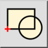

Tạo khối từ vùng chọn
Thanh công cụ / Biểu tượng:


Trình đơn: Khối > Tạo khối từ vùng chọn
Phím tắt: B, C
Lệnh: blockcreate | bc
Thanh công cụ / Biểu tượng:


Tạo một khối mới từ các đối tượng hiện có.
Khối bây giờ được thêm vào danh sách khối và các thể hiện của nó có thể được chèn vào bản vẽ. Các đối tượng bạn đã chọn ở bước đầu tiên được xóa và thay thế bằng một tham chiếu khối của khối vừa tạo.